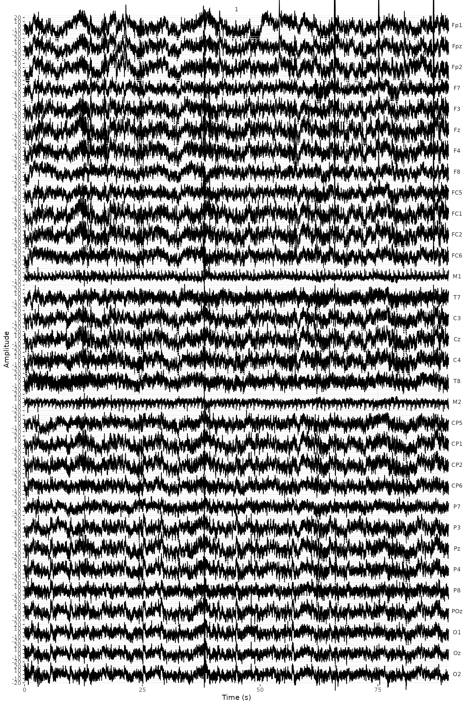
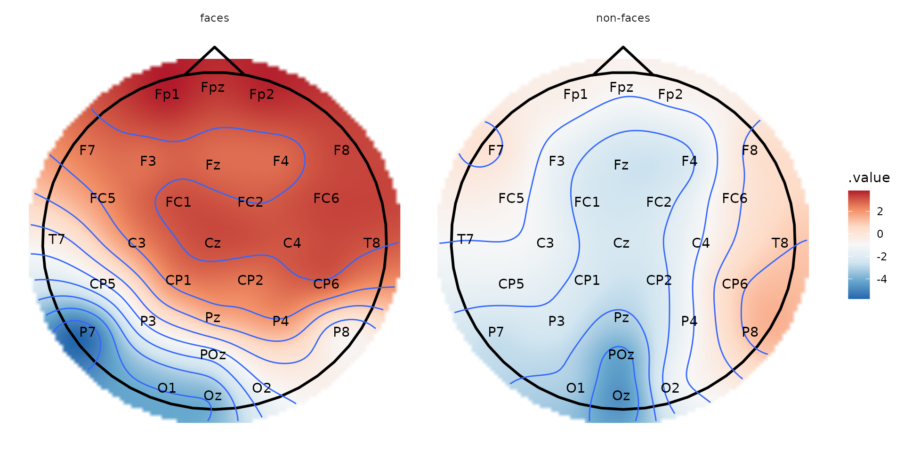

Introduction - Preprocessing and visualization of EEG data
Bruno Nicenboim
2022-01-20
Source:vignettes/intro.Rmd
intro.RmdThe package eeguana provides a framework for doing simple pre-processing with specialized functions and manipulating EEG data with dplyr verbs (e.g., eeg_mutate, eeg_filter, eeg_summarize) extended to a new class eeg_lst, and ggplot wrapper functions. The new class is inspired by tidyverse principles but it’s not really “tidy” (due to space considerations), it’s a list of (i) a wide table that contains the signal amplitudes at every sample point of the EEG, (ii) an events table with information about markers (or triggers), blinks and other exported information, and (iii) a long table with experimental information, such as participant (recording), conditions, etc.
While it’s possible to transform the eeg_lst to a data.frame, data.table or a tibble (with as.data.frame(), as.data.table() and as_tibble()), the motivation for manipulating the data in the eeg_lst format has to do with size considerations. In this case, the original file was 113 MB, converting it to a long format entails a lot of repetition and generates an object of 556 MB. While this will still work here, a long format quickly becomes prohibitive in real settings with longer recordings.
Working with eeguana
Dplyr-like verbs always return an eeg_lst object, which allows us to use magrittr’s pipe, %>% (see ?`dplyr-eeguana`) or the new R pipe |>. In addition, eeg_/ch_ functions will also return an eeg_lst unless they have a suffix _tbl that indicates they return a data frame. In general, we will work with the eeg_lst, unless we want to modify the channels information (with channels_tbl()) or the events table containing markers, artifacts ans custom annotations (with events_tbl).
A practical example: the N170 effect
Here, I exemplify the use of eeguana with raw EEG data exported in the format of BrainVision 1.0. The data belong to a simple experiment where a participant was presented 100 faces and 100 assorted images in random order. The task of the experiment was to mentally count the number of faces.
First we download the data:
# Run the following or just download the files from raw_faces folder in https://osf.io/tbwvz/
library(httr)
GET("https://osf.io/wv5hp//?action=download",
write_disk("./s1_faces.vhdr", overwrite = TRUE),
progress()
)
GET("https://osf.io/c8wea//?action=download",
write_disk("./s1_faces.vmrk", overwrite = TRUE),
progress()
)
GET("https://osf.io/uhsde//?action=download",
write_disk("./s1_faces.eeg", overwrite = TRUE),
progress()
)BrainVision 1.0 exports three files: s1_faces.vhdr, s1_faces.vmrk, and s1_faces.eeg. The file s1_faces.vhdr contains the metadata and links to the other two files, s1_faces.vmrk contains the triggers and other events in the samples, and s1_faces.eeg contains the signals at every sample for every channel recorded.
library(dplyr)
library(ggplot2)
library(stringr)
library(eeguana)
set.seed(123) # ICA will always find the same componentsWe first need to read the data:
faces <- read_vhdr("s1_faces.vhdr")
#> # Reading file s1_faces.vhdr...
#> # Data from ./s1_faces.eeg was read.
#> # Data from 1 segment(s) and 34 channels was loaded.
#> # Object size in memory 113.4 MbThe function read_vhdr() creates a list with data frames for the signal, events, segments information, and incorporates in its attributes generic EEG information.
faces
#> # EEG data:
#>
#> # Signal table:
#> .id .sample Fp1 Fpz Fp2 F7 F3
#> 1: 1 1 -17878.56 -8921.395 -14028.81 -284.2541 -1378.1467
#> 2: 1 2 -17903.75 -8948.022 -14056.53 -303.9134 -1400.6560
#> 3: 1 3 -17916.55 -8961.906 -14070.91 -307.1683 -1407.8466
#> 4: 1 4 -17918.17 -8963.691 -14068.63 -299.8859 -1401.9985
#> 5: 1 5 -17917.71 -8965.658 -14069.16 -294.7915 -1401.2996
#> ---
#> 424484: 1 424484 -16094.71 -8234.730 -13505.21 609.9043 -236.9552
#> 424485: 1 424485 -16140.11 -8280.301 -13547.56 603.1918 -311.0485
#> 424486: 1 424486 -16145.24 -8275.078 -13528.22 541.3096 -291.0218
#> 424487: 1 424487 -16165.22 -8294.479 -13546.50 467.7130 -302.0740
#> 424488: 1 424488 -16167.39 -8305.199 -13561.12 576.3062 -319.2688
#> Fz F4 F8 FC5 FC1 FC2 FC6
#> 1: -8077.128 1167.489 -1663.4490 -2315.080 -9040.689 -795.0549 -3665.146
#> 2: -8101.660 1145.292 -1685.9034 -2338.859 -9064.137 -816.1298 -3688.133
#> 3: -8114.331 1138.028 -1691.4203 -2343.475 -9071.438 -823.4675 -3690.046
#> 4: -8116.114 1139.702 -1683.0713 -2333.746 -9065.608 -817.9690 -3681.642
#> 5: -8119.442 1136.373 -1684.2664 -2326.648 -9061.397 -817.2882 -3679.563
#> ---
#> 424484: -7991.669 1977.146 -162.8618 -2290.511 -9349.164 -318.8641 -2805.395
#> 424485: -8045.019 1938.122 -183.0542 -2424.133 -9410.679 -364.1038 -2833.090
#> 424486: -8032.237 1965.358 -132.3712 -2291.431 -9379.728 -342.3297 -2811.445
#> 424487: -8052.393 1930.877 -180.4978 -2361.589 -9381.456 -358.2924 -2868.325
#> 424488: -8065.579 1927.474 -188.0929 -2368.595 -9409.171 -363.8277 -2853.797
#> M1 T7 C3 Cz C4 T8 M2
#> 1: 0 -5156.998 -2466.320 -1568.4097 -4427.577 -10351.511 -1845.363
#> 2: 0 -5184.417 -2490.411 -1591.3053 -4450.049 -10372.402 -1850.862
#> 3: 0 -5186.146 -2495.726 -1597.7970 -4454.775 -10378.323 -1845.087
#> 4: 0 -5174.358 -2487.358 -1591.5627 -4449.590 -10373.983 -1836.370
#> 5: 0 -5170.146 -2481.878 -1588.5833 -4446.334 -10370.489 -1841.961
#> ---
#> 424484: 0 -3703.158 -2301.288 -395.4219 -2952.459 -9502.499 -2128.771
#> 424485: 0 -3834.959 -2372.439 -444.3945 -2994.426 -9465.224 -2179.546
#> 424486: 0 -3773.260 -2312.064 -419.6414 -2975.410 -9389.198 -2153.340
#> 424487: 0 -3746.392 -2304.304 -426.3353 -2986.242 -9369.264 -2141.644
#> 424488: 0 -3615.768 -2358.720 -437.9209 -2984.145 -9521.864 -2130.978
#> CP5 CP1 CP2 CP6 P7 P3 Pz
#> 1: -8938.128 -4755.838 -1369.6688 -1729.708 -7513.455 -8512.474 -537.63159
#> 2: -8963.231 -4778.917 -1391.3324 -1750.029 -7535.836 -8533.438 -557.97095
#> 3: -8969.171 -4784.986 -1397.7506 -1757.532 -7541.739 -8537.741 -561.55725
#> 4: -8957.989 -4775.938 -1391.9026 -1754.553 -7530.282 -8529.099 -552.78510
#> 5: -8950.726 -4772.205 -1388.7207 -1755.197 -7524.361 -8523.562 -549.19885
#> ---
#> 424484: -8037.571 -4200.332 -677.7635 -1046.501 -5433.473 -8150.485 -34.94090
#> 424485: -8083.840 -4253.405 -721.7708 -1080.431 -5470.565 -8197.932 -79.35287
#> 424486: -8027.603 -4225.636 -702.5348 -1048.874 -5474.501 -8173.215 -60.83399
#> 424487: -8046.398 -4230.160 -709.1735 -1040.856 -5488.533 -8182.244 -64.40166
#> 424488: -8060.742 -4244.541 -712.0606 -1053.931 -5478.491 -8187.780 -69.53255
#> P4 P8 POz O1 Oz O2 HEOG
#> 1: -99.10343 -875.6397 -852.6708 -4117.080 -1950.149 -817.4540 -5006.420
#> 2: -117.14455 -892.3933 -871.1710 -4136.997 -1965.578 -825.3984 -5027.017
#> 3: -122.82701 -892.9816 -873.9114 -4138.725 -1965.137 -824.5893 -5037.775
#> 4: -117.75130 -886.6740 -866.0771 -4126.606 -1957.450 -823.7434 -5033.031
#> 5: -117.82441 -885.3681 -865.5070 -4127.543 -1967.270 -834.0415 -5031.210
#> ---
#> 424484: 496.89807 -182.1897 -304.2810 -2730.290 -1170.744 -67.8408 -3137.224
#> 424485: 458.84891 -229.4153 -345.6953 -2777.571 -1209.235 -104.1242 -3216.466
#> 424486: 476.24600 -226.5095 -342.8815 -2794.121 -1232.792 -135.4974 -3136.874
#> 424487: 471.66693 -247.6580 -343.4331 -2790.444 -1224.516 -152.9679 -3105.096
#> 424488: 475.47369 -247.5108 -350.5685 -2804.640 -1245.077 -186.8792 -3162.988
#> VEOG
#> 1: -9116.806
#> 2: -9133.780
#> 3: -9138.781
#> 4: -9134.222
#> 5: -9139.996
#> ---
#> 424484: -8591.514
#> 424485: -8672.283
#> 424486: -8648.578
#> 424487: -8658.159
#> 424488: -8660.311
#>
#> # Events table:
#> .id .type .description .initial .final .channel
#> 1: 1 New Segment 1 1 <NA>
#> 2: 1 Stimulus s111 10528 10528 <NA>
#> 3: 1 Stimulus s130 10742 10742 <NA>
#> 4: 1 Stimulus s71 11175 11175 <NA>
#> 5: 1 Stimulus s130 12806 12806 <NA>
#> ---
#> 401: 1 Stimulus s130 411197 411197 <NA>
#> 402: 1 Stimulus s71 411469 411469 <NA>
#> 403: 1 Stimulus s121 412943 412943 <NA>
#> 404: 1 Stimulus s122 412966 412966 <NA>
#> 405: 1 Stimulus s102 412989 412989 <NA>
#>
#> # Segments table:
#> .id .recording segment
#> 1: 1 s1_faces.vhdr 1
summary(faces)
#> # EEG data:
#> # Sampling rate: 512 Hz.
#> # Size in memory: 113.4 Mb.
#> # Total duration: 00:13:49.
#> # Summary of segments
#> .recording n_segments n_incomplete
#> 1: s1_faces.vhdr 1 0
#> # Summary of events
#> .type .description n
#> 1: New Segment 1
#> 2: Stimulus s102 1
#> 3: Stimulus s111 1
#> 4: Stimulus s121 1
#> 5: Stimulus s122 1
#> 6: Stimulus s130 200
#> 7: Stimulus s70 100
#> 8: Stimulus s71 100We see that there is no electrode positions in the object, but since we know that the layout was a standard 10/20, we’ll add this layout to the object, using the dataset layout_32_1020. This is required to be able to create topographic plots.
channels_tbl(faces)
#> # A tibble: 34 × 11
#> .channel number .reference resolution unit radius theta phi .x .y
#> <chr> <chr> <chr> <dbl> <chr> <dbl> <dbl> <dbl> <dbl> <dbl>
#> 1 Fp1 Ch1 NA 1 microvo… NA NA NA NA NA
#> 2 Fpz Ch2 NA 1 microvo… NA NA NA NA NA
#> 3 Fp2 Ch3 NA 1 microvo… NA NA NA NA NA
#> 4 F7 Ch4 NA 1 microvo… NA NA NA NA NA
#> 5 F3 Ch5 NA 1 microvo… NA NA NA NA NA
#> 6 Fz Ch6 NA 1 microvo… NA NA NA NA NA
#> 7 F4 Ch7 NA 1 microvo… NA NA NA NA NA
#> 8 F8 Ch8 NA 1 microvo… NA NA NA NA NA
#> 9 FC5 Ch9 NA 1 microvo… NA NA NA NA NA
#> 10 FC1 Ch10 NA 1 microvo… NA NA NA NA NA
#> # … with 24 more rows, and 1 more variable: .z <dbl>
## In case the order of the electrodes is different, we do a left_join instead of replacing the table:
channels_tbl(faces) <- select(channels_tbl(faces), .channel) %>%
left_join(layout_32_1020)
#> Joining, by = ".channel"The plots that eeguana produce are ggplot objects that can be modified like regular ggplot.
plot(faces) +
ggtitle("All the experiment")
#> # Downsampling from 512Hz to 256Hz.
#> # Object size in memory 56.7 Mb
Pre-processing
Rereferencing
In this dataset, the signal from all electrodes is monopolar and referenced to the left mastoid (M1). We want the signal (excluding the EOG channels) to be referenced to linked (left and right) mastoids (M1 and M2).
faces <- eeg_rereference(faces, -VEOG, -HEOG, .ref = c("M1", "M2"))Filtering
We apply a band pass filter of 0.1 to 30 Hz to all the channels except the EOG channels. We don’t segment yet, because discontinuities in the signal create artifacts on the edges.
faces_filt <- eeg_filt_band_pass(faces, -HEOG, -VEOG, .freq = c(.1, 30))
#> Setting up band-pass filter from 0.1 - 30 Hz
#> Width of the transition band at the low cut-off frequency is 0.1 Hz
#> Width of the transition band at the high cut-off frequency is 7.5 HzICA
We want to apply ICA to as much data as possible, but to “representative” data: to data of the experiment and not when the participants were moving or reading the instructions. For the same reason, we want to the ignore artifacts that we are sure are not representing brain activity, because of the extreme amplitudes in the signal.
We first cut a large segment that excludes data before and after the experiment was ran using eeg_segment() (that is, only data from the marker “s111” to “s121”), and then we mark differences of 200 microvolts between peaks with eeg_artif_minmax().
faces_ls <- eeg_segment(faces_filt, .description == "s111", .end = .description == "s121") %>%
eeg_artif_minmax(-HEOG, -VEOG, .threshold = 200, .window = 200, .unit = "ms")
#> # Total of 1 segments found.
#> # Object size in memory 107.5 Mb after segmentation.
#> # Number of intervals with artifacts: 118eeg_artif_minimax() only adds the artifacts in the events table and doesn’t modify the signal. We can have a look at the type of artifacts that were detected, by plotting the signal and the events with annotate_events(). It would be a good idea to just check a couple of seconds of the signal, for that we use the dplyr-like function eeg_filter().
faces_ls %>%
eeg_select(-HEOG, -VEOG)%>%
eeg_filter(as_time(.sample, .unit = "s") %>% between(0, 90)) %>%
plot() +
annotate_events() +
theme(legend.position = "bottom")
#> # Downsampling from 512Hz to 256Hz.
#> # Object size in memory 5.9 Mb
Now we can run ICA, removing the EOG and reference electrodes, and ignoring the artifacts.
## By default, it will ignore artifacts
faces_ica <- faces_ls %>%
eeg_ica(-HEOG, -VEOG, -M1, -M2, .method = adapt_fast_ICA, .ignore = .type == "artifact")
#> # ICA is being done using adapt_fast_ICA...
#> # ICA took 4.36 minsWe can now check the different topographic plots of the ICAs with plot_components(), and their correlation with the EOG channels looking a the summary of the object.
faces_ica %>% plot_components()
eeg_ica_summary_tbl(faces_ica)
#> EOG channels detected as: HEOG, VEOG
#> # Downsampling from 512Hz to 256Hz.
#> # Object size in memory 53.8 Mb
#> .recording EOG .ICA cor var
#> 1: s1_faces.vhdr VEOG ICA1 0.3098529965 0.3387882911
#> 2: s1_faces.vhdr HEOG ICA1 -0.0001132202 0.3387882911
#> 3: s1_faces.vhdr VEOG ICA29 0.0371242658 0.1793728208
#> 4: s1_faces.vhdr HEOG ICA29 -0.0026311737 0.1793728208
#> 5: s1_faces.vhdr VEOG ICA12 0.0504623472 0.0921613172
#> 6: s1_faces.vhdr HEOG ICA12 0.0111921456 0.0921613172
#> 7: s1_faces.vhdr VEOG ICA22 0.0219244495 0.0764852219
#> 8: s1_faces.vhdr HEOG ICA22 -0.0038381089 0.0764852219
#> 9: s1_faces.vhdr VEOG ICA15 -0.0414988976 0.0742544737
#> 10: s1_faces.vhdr HEOG ICA15 -0.0106037734 0.0742544737
#> 11: s1_faces.vhdr VEOG ICA20 0.0125608407 0.0516777429
#> 12: s1_faces.vhdr HEOG ICA20 -0.0009543525 0.0516777429
#> 13: s1_faces.vhdr VEOG ICA21 0.0165618940 0.0409542971
#> 14: s1_faces.vhdr HEOG ICA21 0.0084487520 0.0409542971
#> 15: s1_faces.vhdr VEOG ICA27 -0.0105839169 0.0305187652
#> 16: s1_faces.vhdr HEOG ICA27 -0.0033444192 0.0305187652
#> 17: s1_faces.vhdr HEOG ICA9 -0.0104469531 0.0164572491
#> 18: s1_faces.vhdr VEOG ICA9 -0.0083677586 0.0164572491
#> 19: s1_faces.vhdr VEOG ICA4 -0.0207375364 0.0129502676
#> 20: s1_faces.vhdr HEOG ICA4 -0.0073950796 0.0129502676
#> 21: s1_faces.vhdr HEOG ICA14 0.0042436080 0.0102705876
#> 22: s1_faces.vhdr VEOG ICA14 0.0005749188 0.0102705876
#> 23: s1_faces.vhdr VEOG ICA30 0.0110418330 0.0095064661
#> 24: s1_faces.vhdr HEOG ICA30 0.0010016696 0.0095064661
#> 25: s1_faces.vhdr VEOG ICA16 -0.0106949512 0.0091724722
#> 26: s1_faces.vhdr HEOG ICA16 0.0015450154 0.0091724722
#> 27: s1_faces.vhdr HEOG ICA3 -0.0050633279 0.0079903661
#> 28: s1_faces.vhdr VEOG ICA3 -0.0050068321 0.0079903661
#> 29: s1_faces.vhdr VEOG ICA10 -0.0033766588 0.0056931388
#> 30: s1_faces.vhdr HEOG ICA10 -0.0017528404 0.0056931388
#> 31: s1_faces.vhdr VEOG ICA7 0.0169725199 0.0050171542
#> 32: s1_faces.vhdr HEOG ICA7 0.0018673074 0.0050171542
#> 33: s1_faces.vhdr VEOG ICA25 -0.0142125420 0.0049558227
#> 34: s1_faces.vhdr HEOG ICA25 -0.0045579878 0.0049558227
#> 35: s1_faces.vhdr VEOG ICA24 -0.0114044328 0.0049425692
#> 36: s1_faces.vhdr HEOG ICA24 0.0009826717 0.0049425692
#> 37: s1_faces.vhdr VEOG ICA17 0.0044156334 0.0046351754
#> 38: s1_faces.vhdr HEOG ICA17 -0.0017506491 0.0046351754
#> 39: s1_faces.vhdr HEOG ICA11 0.0112879181 0.0038519218
#> 40: s1_faces.vhdr VEOG ICA11 0.0084937376 0.0038519218
#> 41: s1_faces.vhdr HEOG ICA23 -0.0037578749 0.0037972577
#> 42: s1_faces.vhdr VEOG ICA23 0.0005125567 0.0037972577
#> 43: s1_faces.vhdr VEOG ICA28 0.0076387797 0.0037188109
#> 44: s1_faces.vhdr HEOG ICA28 0.0074422369 0.0037188109
#> 45: s1_faces.vhdr VEOG ICA19 0.0098485902 0.0036669539
#> 46: s1_faces.vhdr HEOG ICA19 0.0010267467 0.0036669539
#> 47: s1_faces.vhdr VEOG ICA18 -0.0240453113 0.0033468363
#> 48: s1_faces.vhdr HEOG ICA18 -0.0128927944 0.0033468363
#> 49: s1_faces.vhdr HEOG ICA2 0.0582359080 0.0017491995
#> 50: s1_faces.vhdr VEOG ICA2 0.0283023293 0.0017491995
#> 51: s1_faces.vhdr VEOG ICA6 -0.0180898570 0.0011369635
#> 52: s1_faces.vhdr HEOG ICA6 -0.0030368843 0.0011369635
#> 53: s1_faces.vhdr VEOG ICA13 -0.0052967610 0.0008897330
#> 54: s1_faces.vhdr HEOG ICA13 0.0033931878 0.0008897330
#> 55: s1_faces.vhdr VEOG ICA5 -0.0198211092 0.0006759164
#> 56: s1_faces.vhdr HEOG ICA5 -0.0177982275 0.0006759164
#> 57: s1_faces.vhdr VEOG ICA8 0.0087774305 0.0004218802
#> 58: s1_faces.vhdr HEOG ICA8 -0.0050821925 0.0004218802
#> 59: s1_faces.vhdr HEOG ICA26 -0.0157882732 0.0001131337
#> 60: s1_faces.vhdr VEOG ICA26 -0.0119805273 0.0001131337
#> .recording EOG .ICA cor varWe’ll look closer at the ICA that are more likely to be related to eye movements, and we’ll compare with signals that look like blinks and saccades:
faces_ica <- faces_ica %>%
eeg_artif_step(HEOG, VEOG, .threshold = 30, .window = 200, .unit = "ms", .freq = c(1, 10)) %>%
eeg_artif_peak(VEOG, .threshold = 100, .freq = c(1, 10))
#> Setting up band-pass filter from 1 - 10 Hz
#> Width of the transition band at the low cut-off frequency is 1 Hz
#> Width of the transition band at the high cut-off frequency is 2.5 Hz
#> # Number of intervals with artifacts: 407
#> Setting up band-pass filter from 1 - 10 Hz
#> Width of the transition band at the low cut-off frequency is 1 Hz
#> Width of the transition band at the high cut-off frequency is 2.5 Hz
#> # Number of intervals with artifacts: 158In order to investigate the ICA, we are using an experimental function not yet exported (that’s why we use the :::). This function will probably converted into a shiny app. It’s possible to get the same plots by using a combination of plot_topo, eeg_ica_show, eeg_ica_summary_tbl, and some ggplot and cowplot functions.
We’ll see how the components explaining the most variance and most correlated to the EOG channels behave:
#samples with blinks
s_peaks <- filter(events_tbl(faces_ica), str_starts(.description, "peak")) %>%
pull(.initial)
eeguana:::plot_ica.eeg_ica_lst(faces_ica, samples = seq(s_peaks[1]-2000,s_peaks[1]+2000))
#> Warning in eeguana:::plot_ica.eeg_ica_lst(faces_ica, samples = seq(s_peaks[1]
#> - : This is an experimental function, and it might change or disappear in the
#> future. (Or it might be transformed into a shinyapp)
#> Using recording: s1_faces.vhdr
#> EOG channels detected as: HEOG, VEOG
#> Calculating the correlation of ICA components with filtered EOG channels...
#> Setting up band-pass filter from 0.1 - 30 Hz
#> Width of the transition band at the low cut-off frequency is 0.1 Hz
#> Width of the transition band at the high cut-off frequency is 7.5 Hz
#> EOG channels detected as: HEOG, VEOG
#> # Downsampling from 512Hz to 256Hz.
#> # Object size in memory 53.9 Mb
#> The following columns of signal_tbl are not channels (or ICA components): ICA1ICA29ICA12ICA22ICA15ICA20ICA21ICA27ICA9ICA4ICA14ICA30ICA16ICA3ICA10ICA7
#> * To build a channel use `channel_dbl()` function, e.g. channel_dbl(0) to populate the table with a channel containing 0 microvolts.
#> * To copy the structure of an existing channel one can do `new_ch = existing_channel * 0 + ...`
The clearest ones is ICA5, and so we’ll just remove that one.
faces_icaed <- faces_ica %>%
eeg_ica_keep(-ICA5) %>%
as_eeg_lst()Now we’ll segment the data to appropriate check if there are still artifacts.
events_tbl(faces_icaed) <- events_tbl(faces_icaed) %>%
filter(!.type %in% "artifact")
faces_seg <- faces_icaed %>%
eeg_select(-description, -type) %>%
eeg_segment(.description %in% c("s70", "s71"), .lim = c(-.1, .5))
#> # Total of 200 segments found.
#> # Object size in memory 16.5 Mb after segmentation.
faces_seg_artif <- faces_seg %>%
eeg_artif_minmax(-HEOG, -VEOG, .threshold = 100, .window = 150, .unit = "ms") %>%
eeg_artif_step(-HEOG, -VEOG, .threshold = 50, .window = 200, .unit = "ms")
#> # Number of intervals with artifacts: 47
#> # Number of intervals with artifacts: 109
## extracts the ids of the segments with artifacts
bad <- filter(events_tbl(faces_seg_artif), .type == "artifact") %>%
pull(.id) %>%
unique()
## Show the segment with artifact and one before and after:
faces_seg_artif %>%
eeg_filter(.id %in% c(bad-1, bad, bad+1)) %>%
eeg_select(-VEOG, -HEOG) %>%
plot() +
annotate_events() +
theme(legend.position = "bottom")
#> # Downsampling from 512Hz to 256Hz.
#> # Object size in memory 3.1 Mb
faces_seg <- faces_seg_artif %>%
eeg_events_to_NA(.type == "artifact", .entire_seg = TRUE, .all_chs = FALSE, .drop_events = TRUE)
summary(faces_seg)
#> # EEG data:
#> # Sampling rate: 512 Hz.
#> # Size in memory: 16.5 Mb.
#> # Total duration: 00:02:00.
#> # Summary of segments
#> .recording n_segments n_incomplete
#> 1: s1_faces.vhdr 200 36
#> # Summary of events
#> .type .description n
#> 1: Stimulus s70 100
#> 2: Stimulus s71 100Finally, we can baseline the segments:
faces_seg <- faces_seg %>% eeg_baseline()Visualization
We edit the segmentation information and add more descriptive labels.
faces_seg <- faces_seg %>%
eeg_mutate(
condition =
ifelse(description == "s70", "faces", "non-faces")
) %>%
eeg_select(-type)
faces_seg
#> # EEG data:
#>
#> # Signal table:
#> .id .sample Fp1 Fpz Fp2 F7 F3
#> 1: 1 -50 -1.3857821 2.506070 -0.39055047 -0.2702236 2.594597
#> 2: 1 -49 -1.1274544 2.458017 -0.86212567 0.2474072 2.493453
#> 3: 1 -48 -0.5343263 2.663517 -0.90710409 1.0784217 2.590668
#> 4: 1 -47 0.2857946 3.060287 -0.57329056 2.1213955 2.852347
#> 5: 1 -46 1.2293715 3.591034 0.08130834 3.2767737 3.249672
#> ---
#> 61596: 200 253 17.4224854 21.813508 24.78382742 10.3744498 13.869748
#> 61597: 200 254 15.8996178 19.758151 22.22385059 8.5421730 12.264111
#> 61598: 200 255 14.4494759 17.598267 19.55794290 6.7753923 10.723693
#> 61599: 200 256 13.0353956 15.411060 16.91034524 5.0949942 9.243335
#> 61600: 200 257 11.5917030 13.255274 14.37007893 3.5016414 7.781486
#> Fz F4 F8 FC5 FC1 FC2
#> 1: 4.0451583 1.7219231 -3.5039627 0.9787852 -2.0510342 -3.593674
#> 2: 3.6861069 0.8413479 -3.1991905 1.1860153 -1.9148800 -4.337968
#> 3: 3.5518103 0.2082478 -2.4387662 1.4601071 -1.5049328 -4.729796
#> 4: 3.5879868 -0.1693005 -1.2959864 1.7821618 -0.8930260 -4.774948
#> 5: 3.7455969 -0.2872642 0.1330329 2.1556332 -0.1488171 -4.487544
#> ---
#> 61596: 1.3319750 -0.6831873 11.1774884 10.7691806 2.9732808 -11.764766
#> 61597: -0.1735025 -1.2701982 9.3928745 9.0858958 1.1318271 -12.803980
#> 61598: -1.5290985 -1.8599549 7.7521538 7.3407476 -0.8911383 -13.812016
#> 61599: -2.7185015 -2.4173607 6.3184340 5.5647397 -3.0334966 -14.752929
#> 61600: -3.7619017 -2.9298388 5.1173740 3.7693201 -5.2449621 -15.608629
#> FC6 M1 T7 C3 Cz C4
#> 1: -2.3777222 -2.030141 7.844882 -2.0730707 -6.499112 -1.123574
#> 2: -2.0384178 -1.922150 8.106049 -2.4121601 -6.855300 -1.877160
#> 3: -1.3275775 -1.785010 7.959406 -2.6624122 -6.839697 -2.539230
#> 4: -0.3222386 -1.654058 7.424104 -2.7796995 -6.468312 -3.055360
#> 5: 0.8980345 -1.545839 6.573076 -2.7107143 -5.770478 -3.356224
#> ---
#> 61596: -3.1732950 4.310870 7.422743 5.1400476 -8.944902 -27.861372
#> 61597: -4.8199959 4.454409 6.981073 3.1227075 -10.823009 -29.156160
#> 61598: -6.4644513 4.482182 6.378309 0.9284449 -12.880319 -30.420984
#> 61599: -8.0073182 4.394789 5.544417 -1.3414921 -14.995715 -31.592958
#> 61600: -9.3687803 4.203761 4.430326 -3.6043362 -17.054014 -32.612199
#> T8 M2 CP5 CP1 CP2 CP6
#> 1: 4.286885 2.030141 2.1693528 -5.5593362 -4.009697 1.9388819
#> 2: 5.612280 1.922150 1.4923855 -5.9252277 -4.807572 1.0801445
#> 3: 7.012211 1.785010 0.6896479 -6.0851911 -5.388034 0.2764139
#> 4: 8.228028 1.654058 -0.1284975 -6.0165472 -5.712001 -0.4261893
#> 5: 9.003441 1.545839 -0.8348813 -5.6954771 -5.744126 -0.9713783
#> ---
#> 61596: -20.202095 -4.310870 8.1591128 0.8839634 -25.424284 -22.8770129
#> 61597: -21.826681 -4.454409 6.7768896 -1.1238025 -27.206824 -24.4041437
#> 61598: -23.059555 -4.482182 5.1485130 -3.3667121 -28.961846 -25.9626922
#> 61599: -23.874749 -4.394789 3.3451701 -5.7015560 -30.566857 -27.5070119
#> 61600: -24.273419 -4.203761 1.4328467 -7.9929327 -31.907547 -28.9667789
#> P7 P3 Pz P4 P8 POz
#> 1: -2.004791 -2.738479 -3.441219 -0.7111998 0.360825 -1.4932577
#> 2: -2.909541 -3.530474 -4.318017 -1.7703446 -2.238023 -2.9233947
#> 3: -3.554971 -4.168055 -5.063847 -2.6760206 -4.638534 -4.2104023
#> 4: -3.870379 -4.568174 -5.618316 -3.3489155 -6.544204 -5.2289503
#> 5: -3.820075 -4.656549 -5.920637 -3.7163777 -7.706011 -5.8678723
#> ---
#> 61596: 6.304326 8.837763 -5.383201 -20.9371203 -17.772999 1.0674391
#> 61597: 5.658292 7.238310 -7.165942 -22.0902450 -18.136742 -0.2756034
#> 61598: 4.614197 5.418532 -9.012603 -23.1112292 -17.711772 -1.6783652
#> 61599: 3.284832 3.487614 -10.795947 -23.9501039 -16.484018 -3.0459904
#> 61600: 1.796745 1.549002 -12.398985 -24.5656352 -14.531866 -4.2979851
#> O1 Oz O2 HEOG VEOG
#> 1: -3.352182 -0.4981054 1.3250303 -8.172153 -4.070868
#> 2: -4.744847 -2.1798164 -0.4597926 -15.399203 -10.286688
#> 3: -6.005732 -3.8014299 -2.2051573 -17.091586 -4.218329
#> 4: -7.006345 -5.1896533 -3.7050433 -22.001254 -2.728094
#> 5: -7.635930 -6.1835499 -4.7667551 -14.368930 3.892999
#> ---
#> 61596: 7.113869 1.5908573 -0.5937514 40.897595 104.275391
#> 61597: 6.142690 0.7273414 0.3127146 19.307751 67.568359
#> 61598: 4.970325 -0.2404153 0.9526069 24.585583 66.189453
#> 61599: 3.731996 -1.2390464 1.2760794 4.779675 43.698242
#> 61600: 2.541580 -2.2117730 1.2452397 -2.815540 36.453125
#>
#> # Events table:
#> .id .type .description .initial .final .channel
#> 1: 1 Stimulus s71 1 1 <NA>
#> 2: 2 Stimulus s71 1 1 <NA>
#> 3: 3 Stimulus s71 1 1 <NA>
#> 4: 4 Stimulus s71 1 1 <NA>
#> 5: 5 Stimulus s71 1 1 <NA>
#> ---
#> 196: 196 Stimulus s71 1 1 <NA>
#> 197: 197 Stimulus s70 1 1 <NA>
#> 198: 198 Stimulus s71 1 1 <NA>
#> 199: 199 Stimulus s71 1 1 <NA>
#> 200: 200 Stimulus s71 1 1 <NA>
#>
#> # Segments table:
#> .id .recording segment description condition
#> 1: 1 s1_faces.vhdr 1 s71 non-faces
#> 2: 2 s1_faces.vhdr 2 s71 non-faces
#> 3: 3 s1_faces.vhdr 3 s71 non-faces
#> 4: 4 s1_faces.vhdr 4 s71 non-faces
#> 5: 5 s1_faces.vhdr 5 s71 non-faces
#> ---
#> 196: 196 s1_faces.vhdr 196 s71 non-faces
#> 197: 197 s1_faces.vhdr 197 s70 faces
#> 198: 198 s1_faces.vhdr 198 s71 non-faces
#> 199: 199 s1_faces.vhdr 199 s71 non-faces
#> 200: 200 s1_faces.vhdr 200 s71 non-facesWith some ggplot skills, we can create customized plots. ggplot is overloaded to work on an eeg_lst by first downsampling the signal when necessary, and converting it to a long-format data frame that is feed into ggplot. This object can then be customized. (Notice that the channels, or component names are in a .key column and their amplitude in .value column, and instead of samples there are now .time in seconds).
## ggplot uses internally a table that looks like this:
faces_seg %>% eeg_filter(.id %in% 1:3) %>%
as_tibble()
#> # A tibble: 31,416 × 8
#> .time .id .recording segment description condition .key .value
#> <dbl> <int> <chr> <int> <chr> <chr> <chr> <dbl>
#> 1 -0.0996 1 s1_faces.vhdr 1 s71 non-faces Fp1 -1.39
#> 2 -0.0977 1 s1_faces.vhdr 1 s71 non-faces Fp1 -1.13
#> 3 -0.0957 1 s1_faces.vhdr 1 s71 non-faces Fp1 -0.534
#> 4 -0.0938 1 s1_faces.vhdr 1 s71 non-faces Fp1 0.286
#> 5 -0.0918 1 s1_faces.vhdr 1 s71 non-faces Fp1 1.23
#> 6 -0.0898 1 s1_faces.vhdr 1 s71 non-faces Fp1 2.21
#> 7 -0.0879 1 s1_faces.vhdr 1 s71 non-faces Fp1 3.15
#> 8 -0.0859 1 s1_faces.vhdr 1 s71 non-faces Fp1 4.02
#> 9 -0.0840 1 s1_faces.vhdr 1 s71 non-faces Fp1 4.80
#> 10 -0.0820 1 s1_faces.vhdr 1 s71 non-faces Fp1 5.48
#> # … with 31,406 more rows
faces_seg %>%
eeg_select(O1, O2, P7, P8) %>%
ggplot(aes(x = .time, y = .value)) +
geom_line(alpha = .1, aes(group = .id, color = condition)) +
stat_summary(
fun = "mean", geom = "line", alpha = 1, size = 1.5,
aes(color = condition)
) +
facet_wrap(~.key) +
geom_vline(xintercept = 0, linetype = "dashed") +
geom_vline(xintercept = .17, linetype = "dotted") +
theme(legend.position = "bottom")
We can see here the N170 component in the faces condition for the average trial on a single participant. We can investigate the signal by averaging the channels of the occipital and parietal lobes using transmute(), and the special function, chs_mean(), a wrapper for rowMeans(), which takes as arguments the relevant channels and whether missing values should be omitted from the calculations.
faces_seg %>%
eeg_transmute(
Occipital = chs_mean(across(starts_with("O")), na.rm = TRUE), #O1, O2, Oz
Parietal = chs_mean(across(starts_with("O")), na.rm = TRUE) # P3, P4, P7, P8, Pz
) %>%
ggplot(aes(x = .time, y = .value)) +
geom_line(alpha = .1, aes(group = .id, color = condition)) +
stat_summary(
fun = "mean", geom = "line", alpha = 1, size = 1,
aes(color = condition)
) +
facet_wrap(~.key) +
theme(legend.position = "bottom")
We can also calculate the ERPs and then plot them in their layout (and we’ll add the same theme that plot uses for eeg_lsts):
ERP_faces <- faces_seg %>%
eeg_group_by(.sample, condition) %>%
eeg_summarize(across_ch(mean, na.rm = TRUE))
ERP_plot <- ERP_faces %>%
ggplot(aes(x = .time, y = .value)) +
geom_line(aes(color = condition)) +
facet_wrap(~.key) +
theme(legend.position = "bottom") +
ggtitle("ERPs for faces vs non-faces") +
theme_eeguana()
ERP_plot %>% plot_in_layout()
Another possibility is to create a topographic plot of the two conditions, by first making segments that include only the interval .1-.2 s after the onset of the stimuli, creating a table with interpolated amplitudes and using the ggplot wrapper plot_topo().
faces_seg %>%
eeg_filter(between(as_time(.sample, .unit = "s"), .1, .2)) %>%
eeg_group_by(condition) %>%
eeg_summarize(across_ch(mean, na.rm = TRUE)) %>%
plot_topo() +
annotate_head() +
geom_contour() +
geom_text(colour = "black") +
facet_grid(~condition)
For more specialized plots or analyses, it might be necessary to extract the data in long data frame format first. Even though, we can do this without transforming the object, here, we transform the data first and then we visualize independent t-tests at every electrode and time point.
df <- faces_seg %>%
eeg_select(O1, O2, P7, P8) %>%
as_tibble() %>%
# We can use regular dplyr functions now
group_by(.key, .time) %>%
summarize(
`t-value` = t.test(
.value[condition == "faces"],
.value[condition == "non-faces"]
)$statistic
)
#> `summarise()` has grouped output by '.key'. You can override using the `.groups` argument.
df
#> # A tibble: 1,232 × 3
#> # Groups: .key [4]
#> .key .time `t-value`
#> <chr> <dbl> <dbl>
#> 1 O1 -0.0996 0.231
#> 2 O1 -0.0977 0.303
#> 3 O1 -0.0957 0.352
#> 4 O1 -0.0938 0.366
#> 5 O1 -0.0918 0.334
#> 6 O1 -0.0898 0.251
#> 7 O1 -0.0879 0.111
#> 8 O1 -0.0859 -0.0909
#> 9 O1 -0.0840 -0.354
#> 10 O1 -0.0820 -0.664
#> # … with 1,222 more rowsThen we just load the data frame into ggplot.
ggplot(df, aes(x = .time, y = `t-value`)) + geom_line() +
facet_wrap(~.key)
However, this can be also done in the without transforming the eeg_lst object:
faces_seg_t <-
faces_seg %>%
eeg_select(O1, O2, P7, P8) %>%
eeg_group_by(.sample) %>%
eeg_summarize(across_ch(list(t = ~t.test(
.[condition == "faces"],
.[condition == "non-faces"]
)$statistic)))
faces_seg_t %>%
ggplot(aes(x = .time, y = .value)) +
geom_line(alpha = .1, aes(group = .id)) +
stat_summary(fun = "mean", geom = "line", alpha = 1, size = 1) +
facet_wrap(~.key) +
theme(legend.position = "bottom")